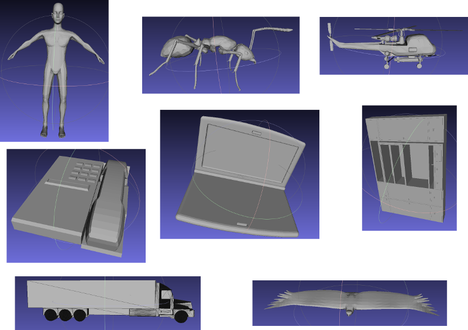
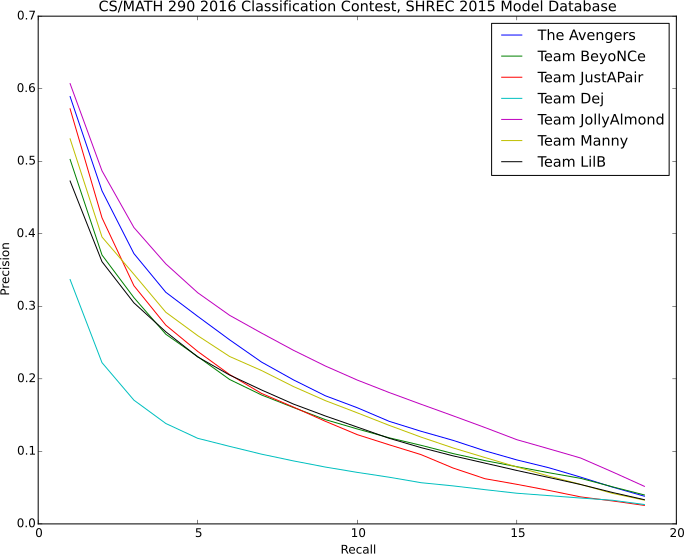

In this assignment, students implemented various statistics for rigid 3D point cloud classification, and they all had the option to enter code into a classification competition on an unknown database. There were 7 submissions total. Below are descriptions of each submission, along with the results of the competition
Database Info

The database that was run was the ground truth model database in the SHREC 2015 Range Scan classification competition. This database consists of 60 different classes with 20 models each, for a total of 1200 models. Note that this database is easier than the range image database, which was the true objective of that competition, but there are still lots of models and a large potential for confusion, and it is markedly harder than the database provided with the assignment. So it is appropriate for this class competition.
Team Names / Submission Descriptions
The Avengers
We made a new descriptor using the equally weighted average of D2 and Spin Image with the best parameter we found, which gives us a much better precision-recall graph than either one. We used Euclidean distance in our comparisons
Team BeyoNCe
We ended up using spin images with chi squared distance
Team JustAPair
Weighted combination of D2 and shape/shell using Euclidean distance
Team Dej
D2 + 1D Earth Mover's
Team JollyAlmond
The best working descriptor and histogram metric that we got is ShapeShell (getShapeShellHistogram) NShells = 50, RMax = 3.0, SPoints = getSphereSamples(2), using Chi Squared
Team Manny
We submitted the D2 Distance with Chi-squared metric to the classification contest, and we found that sampling more than 100,000 points in each point cloud was advantageous
Team LilB
Weighted combo of D2, A3, and EGI, using Euclidean
Experiments / Results
The models were randomly shuffled, and each persons' code (including histogram and histogram comparison) was run. The students' code returned a pairwise distance matrix between every pair of shapes based on their techniques, and that pairwise distance matrix was evaluated based on ground truth labels.
Precision Recall Graph

Other Statistics
Best statistics are bolded. The rank statistics are with respect to items that are in the correct class. Mean average precision is the area under the average precision recall curve.